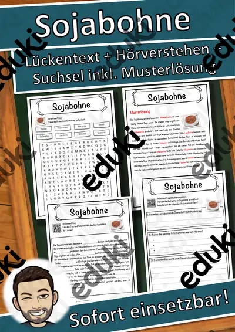
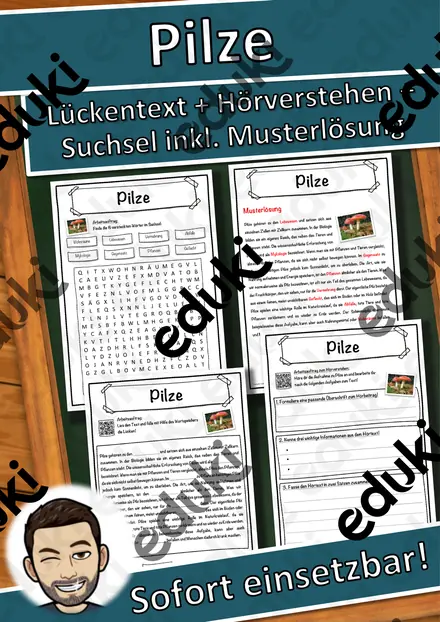
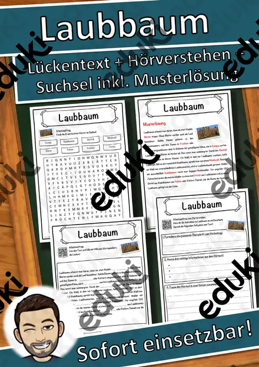

Pflanzen, Samen und Blüte: Arbeitsblätter für Klasse 1–5 (Sachunterricht)
Vom Samenkorn bis zur Blüte: Pflanzen lassen sich im Klassenzimmer beobachten und eignen sich für erste Versuche mit Protokoll. Der Lehrplan verbindet Pflanzenkunde mit Jahreszeiten, Ernährung und Naturschutz.
Gearbeitet wird in der Regel an Samen, Keimung und Wurzel und Spross, ergänzt um Blüte, Frühblüher und Laub- und Nadelbäume.
Wo genau im Lehrplan das Thema steht, unterscheidet sich von Land zu Land, häufig im Fach Sachunterricht in den Klassen 1 bis 5. Gemeinsames Ziel: die Kinder benennen Pflanzenteile, erklären Bedingungen der Keimung und führen einen Versuch mit Beobachtungsbogen durch.
Im Alltag einer Lehrkraft zählt, dass Material sofort einsatzbereit ist: Die Blätter zu Pflanzen, Samen und Blüte greifen Keimung, Wurzel und Spross und Blüte auf, lassen sich ausdrucken und kommen mit Lösungen, damit die Vorbereitung kurz bleibt. Leistungsstarke und schwächere Lesende erhalten über die Lesespurgeschichten Texte in drei Stufen.
Zum Thema finden Sie 22 Materialien, unter anderem Materialpaket Wald Steckbriefe, Frühblüher Materialpaket und Lesespaziergang: Frühblüher im Garten und im, verteilt auf 5 Lesespurgeschichten, 1 Lesespaziergang und 13 Lückentexte mit Hörverstehen in Klasse 2–6. Bohnen im Glas mit feuchtem Küchenpapier keimen in einer Woche und liefern Material für ein Wachstumstagebuch.
Das gehört zum Thema
Passende Arbeitsblätter und Materialpakete

Materialpaket Wald Steckbriefe Laubbaum/Nadelbaum

Frühblüher Materialpaket - Frühblüher

Lesespaziergang: Frühblüher im Garten und im Wald – 3-fach differenziert (★/★★/★★★), Klasse 2–4

Die Christrose – eine Blume blüht im Schnee – Lesespurgeschichte mit Rätselaufgaben (Klasse 6)

Der Weihnachtsstern – eine Pflanze aus Mexiko – Lesespurgeschichte mit Rätselaufgaben (Klasse 5)

Der Pilz – Lesespurgeschichte mit Rätselaufgaben (Klasse 5)

Die Blüte – Lesespurgeschichte mit Rätselaufgaben (Klasse 6)

Die Pflanze – Vom Samen zur Frucht – Lesespurgeschichte mit Rätselaufgaben (Klasse 5)

Sojabohne Lückentext mit Wortspeicher Hörverstehen und Suchsel

Samen Lückentext mit Wortspeicher Hörverstehen und Suchsel

Pilze Lückentext mit Wortspeicher Hörverstehen und Suchsel

Pflanzen Lückentext mit Wortspeicher Hörverstehen und Suchsel

Nadelbaum Lückentext mit Wortspeicher Hörverstehen und Suchsel

Gras Lückentext mit Wortspeicher Hörverstehen und Suchsel

Fleischfressende Pflanze Lückentext mit Wortspeicher Hörverstehen und Suchsel

Moose Lückentext mit Wortspeicher Hörverstehen und Suchsel

Löwenzahn Lückentext mit Wortspeicher Hörverstehen und Suchsel

Laubbaum Lückentext mit Wortspeicher Hörverstehen und Suchsel

Blüte Lückentext mit Wortspeicher Hörverstehen und Suchsel

Blume Lückentext mit Wortspeicher Hörverstehen und Suchsel

Farne Lückentext mit Wortspeicher Hörverstehen und Suchsel

Ausmalbild Frühblüher - Kunst Ausmalbilder Frühling - Blumen
Häufige Fragen
Für welche Klassenstufe passen die Arbeitsblätter zu Pflanzen, Samen und Blüte?
Die 22 Materialien zu diesem Thema sind für Klasse 2–6 ausgelegt, die meisten davon für Klasse 6. Einzelne Titel lassen sich mit Anpassung auch eine Stufe darunter oder darüber einsetzen.
Welche Inhalte decken die Materialien zu Pflanzen, Samen und Blüte ab?
Die Materialien arbeiten an Samen, Keimung und Wurzel und Spross und gehen dann weiter zu Blüte, Frühblüher und Laub- und Nadelbäume. Vorab lohnt ein Blick in den Lehrplan des eigenen Bundeslandes.
Wie setze ich Pflanzen, Samen und Blüte im Unterricht ein?
Bohnen im Glas mit feuchtem Küchenpapier keimen in einer Woche und liefern Material für ein Wachstumstagebuch. So entsteht aus den Blättern eine kleine Einheit, die sich auf zwei bis drei Stunden verteilen lässt.
Mehr Material nach Fach und Klasse
Verwandte Lehrplanthemen
- Wald und Waldtiere (Sachunterricht, Klasse 1–5)
- Bauernhof und Nutztiere (Sachunterricht, Klasse 1–4)
- Berufe und Berufswahl (Sachunterricht, Klasse 1–10)
- Dinosaurier und Urzeit (Sachunterricht, Klasse 1–5)
- Geld und Konsum (Sachunterricht, Klasse 2–10)